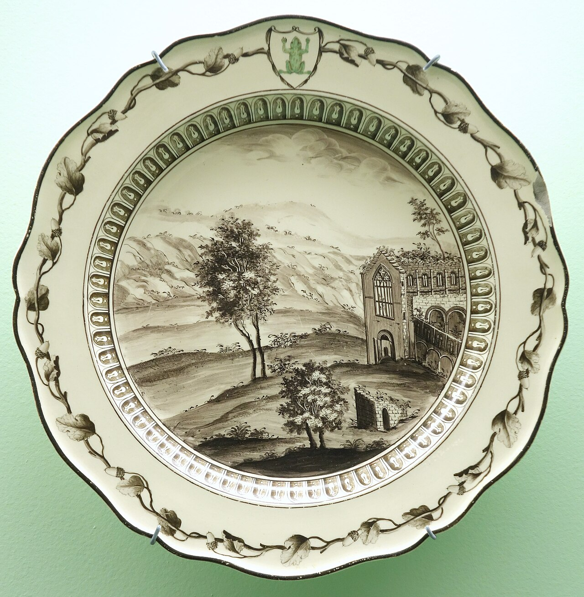

1편에서 아마존은 상품을 규격에 맞춰 데이터베이스에 넣는 곳이라고 했다. 그렇다면 질문이 하나 남는다. 그 규격 안에서 브랜드의 이야기는 어디에 쓸 수 있을까?
웨지우드는 같은 도기에 ‘여왕의 도자기’라는 이야기를 입혀 값을 올렸다. 아마존에서는 이야기를 쓸 칸이 정해져 있고, 쓸 수 없는 말도 정해져 있다. 이번 글은 그 좁은 문을 들여다본다. 그리고 문이 좁다면 브랜드는 어디서 만들어지는지도 묻는다.
이 글에서 확인할 개념
브랜드 스토리텔링A+ 콘텐츠표현 규제설득과 신뢰플랫폼 거버넌스외부 트래픽D2C01이야기를 쓸 수 있는 자리: A+ 콘텐츠
아마존이 셀러에게 허락하는 가장 큰 ‘이야기 공간’은 A+ 콘텐츠다. 상세 페이지 아래쪽에서 사진, 비교표, 브랜드 소개를 풍부하게 보여 주는 영역이다. 다만 조건이 있다.
- 브랜드 등록(Brand Registry)을 한 브랜드만 쓸 수 있다. 등록하려면 상표(등록 상표 또는 출원 중인 상표)가 있어야 한다.
- 미리 정해진 모듈(이미지와 글, 비교표, 사양표 등)을 조합해서 구성한다. 자유로운 웹페이지가 아니다.
- 상위 버전(Premium A+)은 영상, 인터랙티브 이미지 같은 모듈이 더 많다.
앞서 본 제목의 75자 제한 뒤에 생긴 새 칸, ‘아이템 하이라이트(125자)’도 같은 방식이다. 이야기를 허락하되 아마존이 정한 그릇에 담게 한다.
영상: Intro to A+ Content on Amazon, Amazon Seller University. 아마존이 직접 소개하는 A+ 콘텐츠다.
비유하자면 이렇다. 웨지우드에게 쇼룸과 카탈로그는 자기가 마음대로 꾸미는 무대였다. 아마존의 A+ 콘텐츠는 아마존이 빌려준 정해진 규격의 진열대다. 같은 이야기라도 어디에서 하느냐에 따라 자유도가 완전히 다르다.
02쓸 수 없는 말들
더 눈에 띄는 것은 하지 못하게 한 것들이다. 아래는 아마존 정책을 다룬 2차 자료를 정리한 것이다. (공식 정책 원문은 셀러 센트럴 로그인이 필요해 직접 읽지 못했다. 반드시 본인 계정에서 확인하자.)
| 영역 | 제한되는 것으로 알려진 내용 |
|---|---|
| A+ 콘텐츠 | 가격, 할인·무료배송 같은 홍보 문구, 보증, “1위”·“베스트셀러” 같은 표현, 고객 리뷰·별점 인용, 외부 링크, 경쟁사 비교 |
| 건강 식품·보충제 | 질병의 치료·예방 주장, 오해를 부르는 효능 표현 |
| 뷰티·건강 이미지 | 비포·애프터 사진, 체중·피부·모발 변화를 암시하는 이미지 |
| 환경 표현 | “친환경” 같은 주장은 입증이 필요 |
이 목록을 읽으면 공통점이 보인다. 지워진 것은 가장 강력한 설득 수단들이다. 가격 할인, “1위”라는 사회적 증거, 극적인 변화 사진, 경쟁사와의 직접 비교. 마케팅 교과서가 가르치는 효과 좋은 무기를 대부분 내려놓게 한 셈이다.
03“어기면 계정이 정지된다”는 말은 맞을까
흔히 이렇게 말한다. “비포·애프터 한 번 쓰면 계정이 날아간다.” 반은 맞고 반은 과장이다. 2차 자료들이 설명하는 제재는 보통 단계를 밟는다.
- 1단계문제가 된 리스팅의 노출 제한(suppression). 해당 상품이 검색에서 사라지고, 수정하면 복구된다
- 2단계리스팅 삭제, 판매 권한 제한
- 3단계반복되거나 심각하면 계정 정지
대부분은 1단계에서 끝난다. 다만 셀러에게는 1단계도 치명적이다. 검색에서 사라지는 것은 곧 매출이 끊기는 것이고, 앞서 본 대로 판매 성과가 노출을 좌우하는 순환에서는 한 번의 공백이 오래 영향을 준다. 제재의 무서움은 정지 자체보다 그 가능성이 셀러의 표현을 미리 줄이게 만든다는 데 있다.
04틱톡과 어떻게 다른가
틱톡에서는 비포·애프터가 흔히 보이는데 왜 아마존은 막을까? 단순히 “틱톡은 허용하고 아마존은 금지”라고 보면 정확하지 않다. 틱톡도 광고 정책이 있다. 알려진 바로는 체중 관리 제품 광고에서는 체중 변화 전후 사진이나 과장된 효과 주장을 금지하고, 2023년 9월에는 체중 감량 보조제와 단식 앱 광고를 금지한다고 밝혔다. 다만 진짜이고 가공하지 않은 전후 사진은 일부 맥락에서 허용된다고 한다.
| 틱톡 | 아마존 상세 페이지 | |
|---|---|---|
| 공간의 성격 | 설득과 재미의 공간 | 신뢰와 비교의 공간 |
| 사용자의 마음 | 구경하다가 끌린다(충동) | 사려고 찾아왔다(결정) |
| 콘텐츠 주체 | 크리에이터, 영상 | 규격화된 이미지·글 |
| 표현의 자유 | 상대적으로 넓음(광고는 제한) | 좁고 사전 규정이 많음 |
핵심은 두 공간이 하는 일이 다르다는 것이다. 틱톡은 아직 필요를 모르는 사람의 마음을 움직이는 곳이다. 아마존은 이미 사려는 사람이 마지막으로 확인하는 곳이다. 후자에서는 과장이 곧 환불과 불만으로 돌아온다.
05왜 이렇게 설계했을까
(이 절은 사실 확인이 아니라 제 해석이다.)
| 이유 | 설명 |
|---|---|
| ① 신뢰의 소유자는 아마존 | 소비자는 셀러가 아니라 “아마존에서 샀다”고 기억한다. 한 셀러의 과장이 아마존 전체의 신뢰를 깎는다 |
| ② 책임의 문제 | 허위·과장 광고는 규제 기관의 관심 대상이다. 플랫폼은 스스로 책임을 줄이려 한다 |
| ③ 비교의 공정성 | 한 셀러만 과장하면 정직한 셀러가 불리해진다. 같은 기준이 필요하다 |
| ④ 반품 비용 | 기대가 부풀려지면 반품이 늘고 물류 비용이 커진다 |
| ⑤ 힘의 구조 | 설득 수단이 줄면 셀러의 차별화 무기도 줄고, 가격과 광고 입찰이 남는다 |
여기서 주의할 점이 있다. 규제 자체를 비판하자는 것이 아니다. 과장 광고를 막는 것은 소비자에게 이롭고 정직한 셀러에게도 이롭다. 문제는 규제의 효과가 한쪽으로 쏠릴 때다. 표현의 자유가 줄수록 셀러는 아마존 안에서 브랜드를 키우기 어려워지고, 아마존 안의 광고에 더 기대게 된다.
06그렇다면 브랜드는 어디서 만드는가
문이 좁다면 이야기를 다른 곳에서 해야 한다. 아마존도 이 점을 안다. 아마존에는 브랜드 등록을 한 셀러가 아마존 밖(구글, 메타, 틱톡, 이메일 등)에서 고객을 데려오면 판매 수수료를 일부 돌려주는 제도(Brand Referral Bonus)가 있다. 알려진 바로는 2021년 7월에 시작했고, 평균 10% 안팎의 보너스를 준다. 추적에는 ‘Amazon Attribution’이라는 도구를 쓴다.
이 구조를 이렇게 읽을 수 있다.
- 이야기와 설득은 아마존 밖의 비용으로 한다(틱톡, 유튜브, 인스타그램, 구글).
- 결제는 아마존 안에서 이루어지고, 고객은 아마존의 고객이 된다.
- 아마존은 그 대가로 수수료 일부를 돌려준다.
브랜드 구축의 비용은 셀러가 내고, 전환과 고객 데이터는 플랫폼이 가져가는 구조다. 그래서 오래된 셀러들이 이렇게 말한다. “아마존은 매출을 만드는 곳이지, 브랜드를 만드는 곳이 아니다.”

웨지우드에게는 쇼룸과 카탈로그가 있었다. 운더맨에게는 우편함과 반응 카드, 고객 명부가 있었다. 지금 브랜드에게도 자기만의 무대가 필요하다.
자체 쇼핑몰, 이메일 목록, SNS 계정. 모두 아마존이 허락해 주는 공간이 아니라 내 것이다.
07세 이야기가 만나는 곳
| 글 | 핵심 교훈 |
|---|---|
| 웨지우드 | 제품 위에 이야기를 입히면 가치가 달라진다. 그 이야기는 내가 만든 무대에서 한다. |
| 운더맨 | 고객에게 직접 말을 걸고 반응을 기록하는 것이 관계의 시작이다. |
| 아마존 웨이 1·2편 | 플랫폼은 검색과 표현을 규격화해 편리함과 힘을 동시에 얻는다. 그 안에서 브랜드가 사라지지 않으려면 밖에서 따로 키워야 한다. |
아마존에서 파는 것을 배우는 일은 곧 플랫폼 안에서 팔면서 플랫폼 밖에서 브랜드를 만드는 법을 배우는 일이다. 규칙을 아는 사람만이 규칙 안에서 효율적으로 팔고, 규칙 밖에서 자산을 쌓는다.
생각해 볼 질문
- 아마존이 비포·애프터와 “1위” 표현을 제한하는 것은 소비자 보호일까, 셀러의 설득 수단을 줄이는 일일까? 둘 다일 수 있는 조건은 무엇인가?
- 틱톡에서 본 광고로 상품을 아마존에서 산 적이 있는가? 그때 브랜드는 누구에게 남았는가?
- 브랜드 등록과 상표가 없는 작은 셀러는 A+ 콘텐츠를 쓸 수 없다. 이것은 공정한가?
- 아마존 밖에서 브랜드를 키우려면 어떤 채널을 어떤 순서로 만들겠는가?
- 웨지우드가 지금 아마존 셀러라면 이야기를 어디서 풀겠는가?
참고출처와 이미지
- Amazon Seller University 및 셀러 센트럴 도움말(A+ 콘텐츠, Product detail page rules, Image issues). 로그인이 필요한 부분은 원문을 직접 읽지 못했다.
- 2차 자료: A+ 콘텐츠 가이드(Channelengine, Riverbend Consulting 등), 아마존 보충제·뷰티 정책 해설(Fussy Penguins, Bellavix 등), Brand Referral Bonus 해설(Marketplace Pulse, EcomCrew 등)
- TikTok 광고 정책: Business Insider(2023.9, 체중 감량 광고 금지 보도), 셀러 가이드(BigSeller)
- 이미지: Wikimedia Commons. 재스퍼웨어 찻주전자(Chazen Museum of Art, CC0), 개구리 식기(Brooklyn Museum, 퍼블릭 도메인)
- 영상: Amazon Seller University (YouTube 임베드)